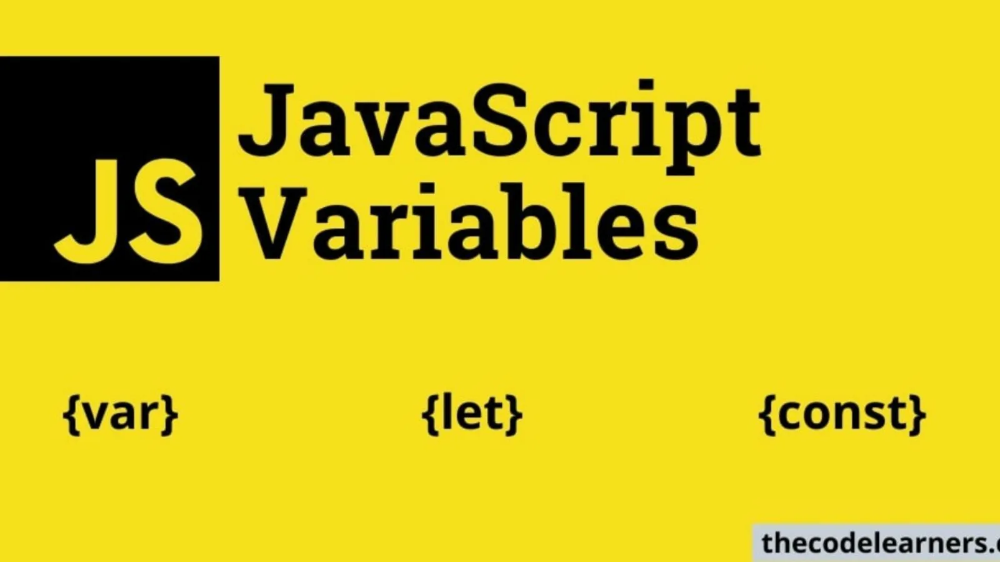
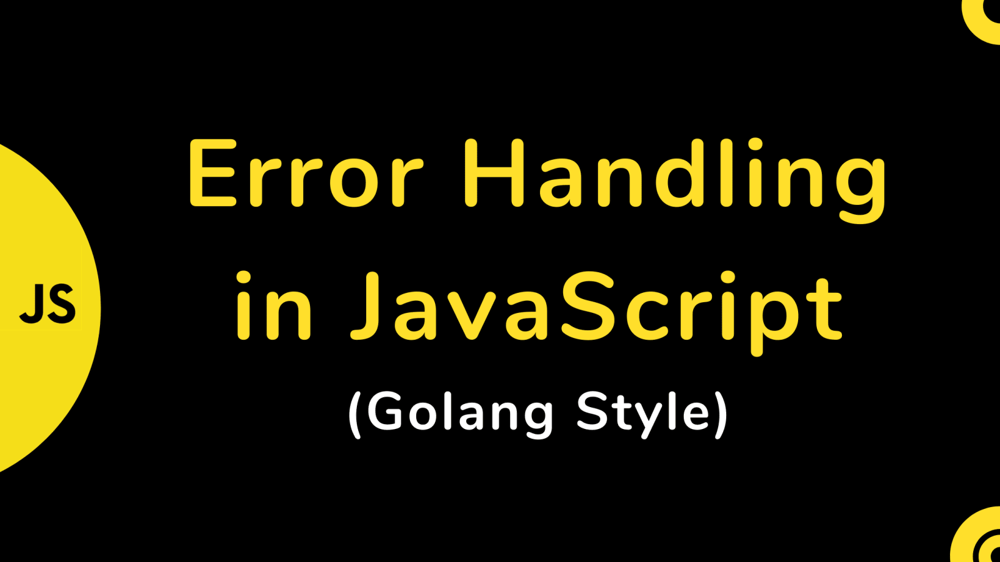

- IntroJs
- Variable scope
- Error handling
- Event loop Go to table section Go to subscription form section
Intro js
JavaScript (JS) is a lightweight, interpreted, or just-in-time compiled programming language with first-class functions. While it is most well-known as the scripting language for Web pages, many non-browser environments also use it, such as Node.js, Apache CouchDB and Adobe Acrobat. JavaScript is a prototype-based, multi-paradigm, single-threaded, dynamic language, supporting object-oriented, imperative, and declarative (e.g. functional programming) styles. Read more about JavaScript.
Reference copied from(new tab)
Variable scope
When you declare a variable outside of any function, it is called a global variable, because it is available to any other code in the current document. When you declare a variable within a function, it is called a local variable, because it is available only within that function. JavaScript before ECMAScript 2015 does not have block statement scope. Rather, a variable declared within a block is local to the function (or global scope) that the block resides within. For example, the following code will log 5, because the scope of x is the global context (or the function context if the code is part of a function). The scope of x is not limited to the immediate if statement block.
Reference copied from
Error handling
try
catch
block
JavaScript supports a compact set of statements, specifically control flow statements, that you can use to incorporate a great deal of interactivity in your application. This chapter provides an overview of these statements. The JavaScript reference contains exhaustive details about the statements in this chapter. The semicolon (;) character is used to separate statements in JavaScript code. Any JavaScript expression is also a statement. See Expressions and operators for complete information about expressions.
Reference copied from
The Event Loop

JavaScript has a runtime model based on an event loop, which is responsible for executing the code, collecting and processing events, and executing queued sub-tasks. This model is quite different from models in other languages like C and Java.
Reference from(new tab)Local election nepal
| Sn | Name | Vote Count |
|---|---|---|
| 1 | Balen Shah | 68000 |
| 2 | Keshav Sthapit | 38000 |
| 3 | Sunita smth | 40000 |
| N | Total | 100000 |